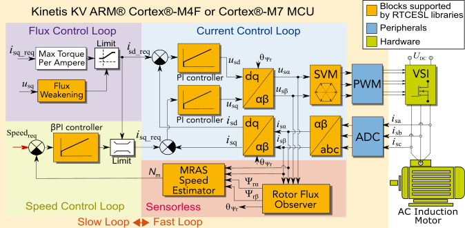

|  |
|
Application concept
This application implements sensorless Field Oriented Control (FOC) and open-loop scalar control of AC Induction Machine (ACIM). Rotor speed is estimated using the Model-Adaptive Reference System (MRAS) algorithm. Rotor flux estimation is obtained using the Rotor Flux Observer (RFO) algorithm. Find documentation and more info on www.nxp.com/motorcontrol_acim. Please, suggest improvements and give us feedback here! |